vignettes/ggplot-cleveland.Rmd
ggplot-cleveland.RmdEn este material se presentan ejemplos de las funciones ofrecidas por el paquete ggcleveland, todas ellas destinadas al Análisis Exploratorio de Datos.
El dataset futbol contiene datos sobre la distancia (dist) que recorre la pelota al ser pateada por jugadores de fútbol según la longitud de pierna (long) del pateador, que se encuentra categorizada. El objetivo es determinar si la distancia está relacionada con la longitud de pierna. Se podría esperar que los jugadores de piernas más largas tengan una contextura física mayor y por lo tanto mayor potencia al patear.
La función gg_quantiles() produce gráficos QQ (cuantil-cuantil) para comparar la distribución de una variable cuantitativa en dos o más grupos:
data(futbol)
# Quedarse con solo dos grupos
futbol2 <-
futbol %>%
filter(longp %in% c("< 0.81 m", "0.81 a 0.90 m"))
# Gráfico de cuantiles para dos grupos
gg_quantiles(futbol2, dist, longp)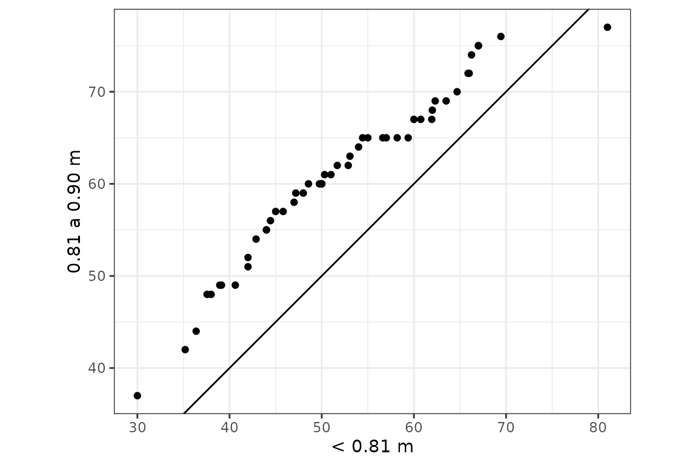
# Más de dos grupos
gg_quantiles(futbol, dist, longp, size = 0.4, color = "red", shape = 3) +
labs(title = "Gráficos QQ de a pares", x = "Distancia (m)", y = "Distancia (m)")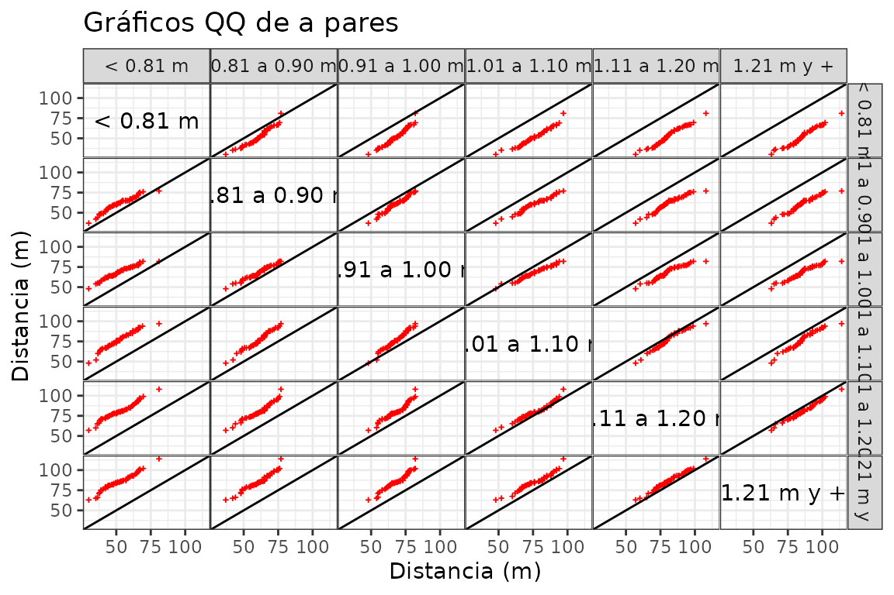
También permite graficar los cuantiles de cada grupo vs cuantiles calculados con todos los grupos combinados. Esto puede ser útil para estudiar residuos luego de algún ajuste, con el objetivo de evaluar la homogeneidad de los mismos. En el siguiente ejemplo, se realiza un ajuste por la media (como en un modelo lineal) y se comparar los residuos de cada grupo versus todos los residuos juntos:
futbol <-
futbol %>%
group_by(longp) %>%
mutate(ajuste = mean(dist), res = dist - ajuste)
gg_quantiles(futbol, res, longp, combined = TRUE) 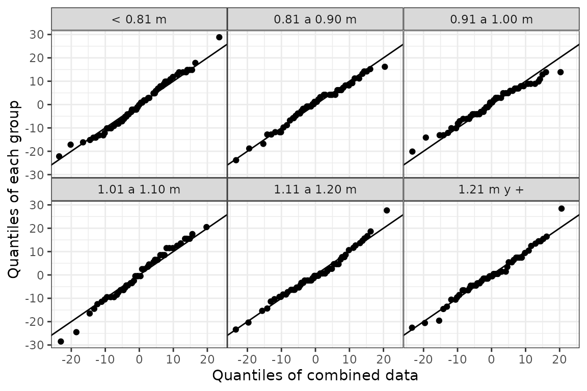
Las funciones gg_tmd() y gg_tmd_paired() producen el gráfico de medias-diferencias de Tukey (Tukey’s Mean-Difference Plot), que puede ser utilizado para evaluar visualmente el desplazamiento entre 2 o más distribuciones:
# Dos grupos
gg_tmd(futbol2, dist, longp)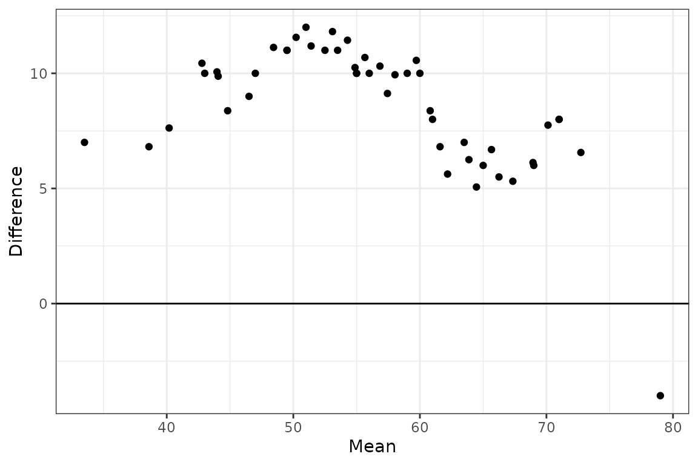
# Múltiples grupos
gg_tmd(futbol, dist, longp, size = 0.5)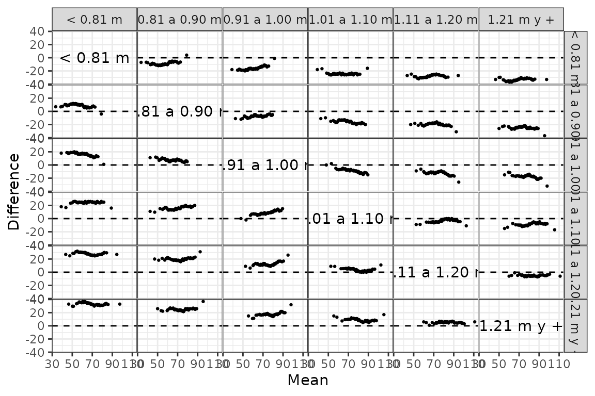
Cuando se tienen dos muestras apareadas, se debe utilizar la función gg_tmd_paired(), que requiere la misma cantidad de observaciones en cada grupo y que las variables estén medidas en la misma escala, como ocurre con el dataset ozone, el cual presenta la concentración de ozono en dos ciudades distintas durante los mismos días:
data(ozone)
gg_tmd_paired(ozone, stamford, yonkers)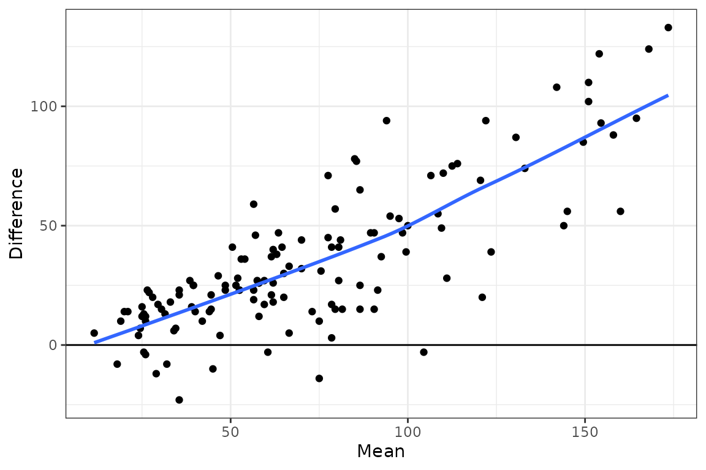
La función gg_rf() produce un residual-fit plot (gráfico de residuos y valores ajustados), que permite comparar la dispersión de los residuos de un ajuste y de los valores ajustados, dando una idea de la variabilidad total explicada por el ajuste del modelo:
gg_rf(futbol, dist, ajuste, res, ylabel = "Distancia (m)")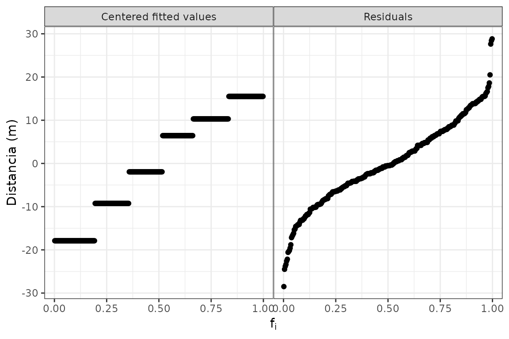
# Agregando las observaciones centradas por la media general
gg_rf(futbol, dist, ajuste, res, cen_obs = TRUE, ylabel = "Distancia (m)")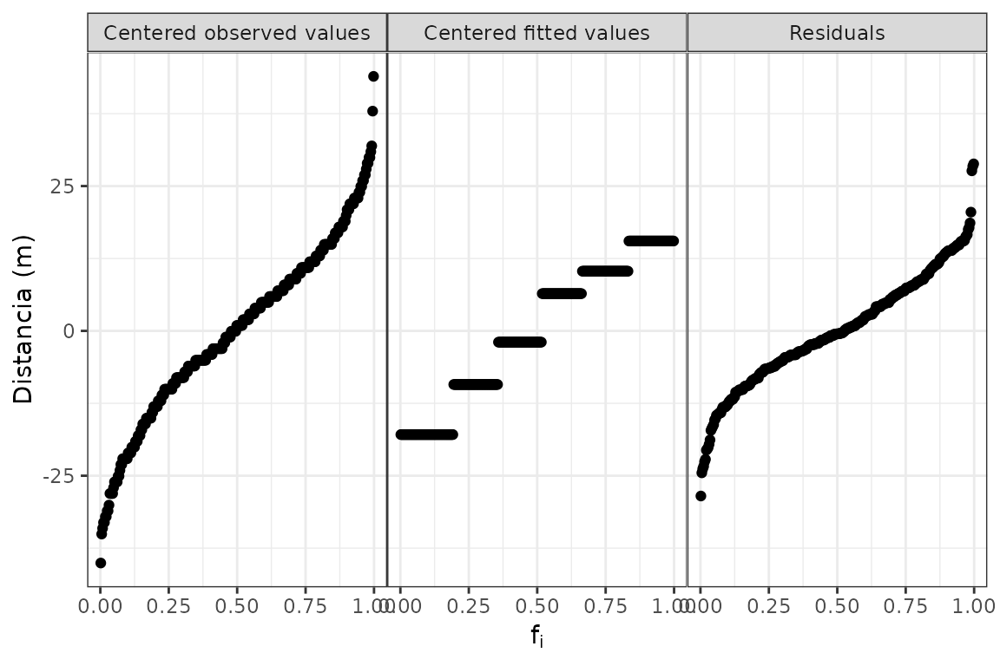
La función gg_sl() produce un spread-location plot, una herramienta que busca detectar cambios en dispersión, reduciéndolo a un problema de observación de la posición.
gg_sl(futbol2, dist, longp, xlabel = "Mediana de distancia jittered (m)",
jitterwidth = 1.5) +
xlim(45, 68)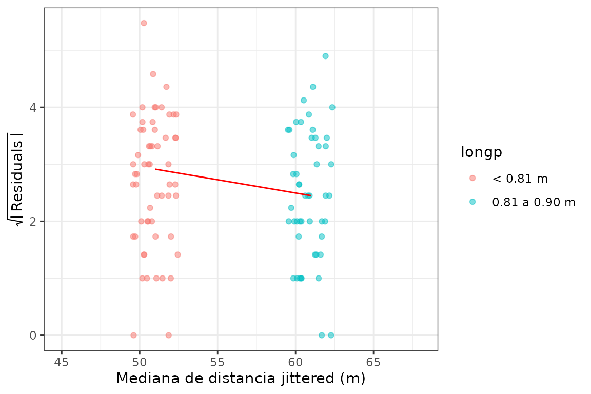
La función gg_pt() produce gráficos QQ Normal para evaluar transformaciones de potencia, que consisten en elevar a las observaciones a un conjunto de potencias señaladas en el argumento tau, en el cual el valor 0 indica la transformación logarítmica:
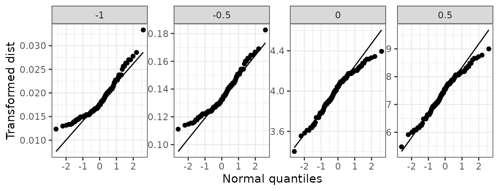
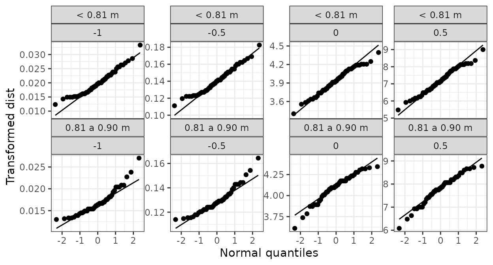
La función gg_coplot() produce conditioning plots o coplots, los cuales son una herramienta de visualización útil para estudiar cómo una variable respuesta depende de 2 o más factores. Un coplot permite visualizar dependencia condicional. El panel superior indica cada rango de valores de la variable condicionante a los cuales queda condicionada la relación que se observa entre las otras dos variables en los paneles inferiores, que pueden considerarse como los paneles dependientes.
Se ejemplifica con los datos rubber, que tratan sobre un experimento industrial donde se probó el efecto de un material abrasivo sobre 30 piezas de caucho, registrando tres variables.
data(rubber)
# Slicing con intervalos solapados
gg_coplot(rubber, x = tensile.strength, y = abrasion.loss, faceting = hardness,
number_bins = 6, overlap = 3/4,
ylabel = "Pérdida de abrasión (g/hp-hour))",
xlabel = "Resistencia a la tracción (kg/cm2)",
facet_label = "Dureza (grados Shore)",
loess_family = "symmetric", size = 2)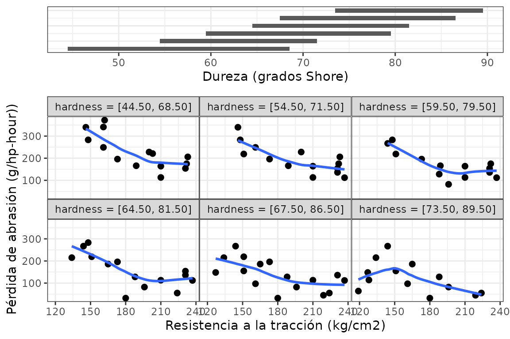
# Slicing con intervalos sin solapamientos, con igual amplitud
gg_coplot(rubber, x = tensile.strength, y = abrasion.loss, faceting = hardness,
number_bins = 6, overlap = 0,
ylabel = "Pérdida de abrasión (g/hp-hour))",
xlabel = "Resistencia a la tracción (kg/cm2)",
facet_label = "Dureza (grados Shore)",
loess = FALSE, size = 2)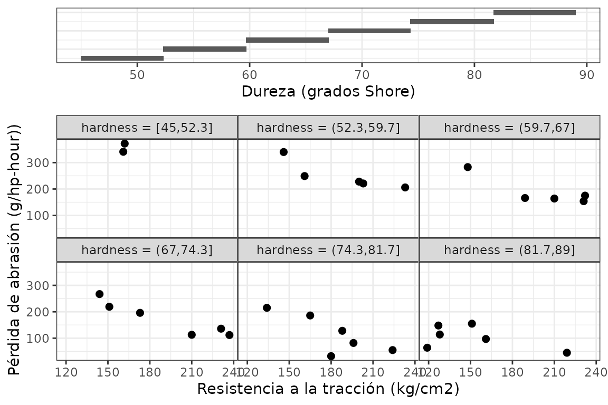
# Slicing con intervalos sin solapamientos, con aprox. igual cantidad de datos
gg_coplot(rubber, x = tensile.strength, y = abrasion.loss, faceting = hardness,
number_bins = 6, overlap = 0, equal_length = F,
ylabel = "Pérdida de abrasión (g/hp-hour))",
xlabel = "Resistencia a la tracción (kg/cm2)",
facet_label = "Dureza (grados Shore)",
loess = FALSE, size = 2)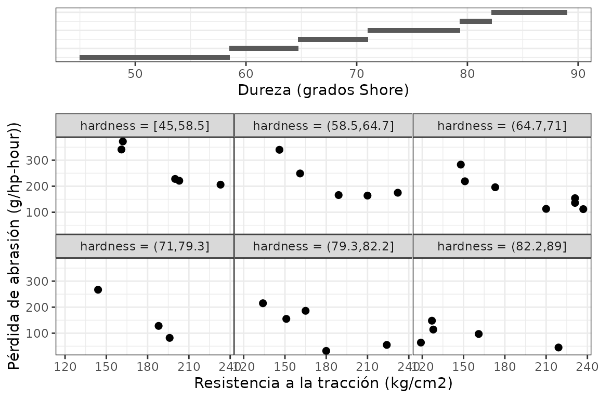
En el caso de que la variable condicionante tenga pocos valores distintos, cada uno de ellos puede utilizarse como un panel condicionante para explorar la relación entre las otras dos variables, como ocurre con el dataset galaxy:
data(galaxy)
# Slicing con los valores únicos de la variable de faceting
gg_coplot(galaxy, x = posicion.radial, y = velocidad,
faceting = angulo, number_bins = 7, loess_span = .5, loess_degree = 2,
facet_labeller = function(x) paste0("Ángulo = ", x, "º"),
facet_label = "Ángulo (grado)", facets_nrow = 2, intervals_height = 0.2,
xlabel = "Posición radial (arcsec)", ylabel = "Velocidad (km/s)")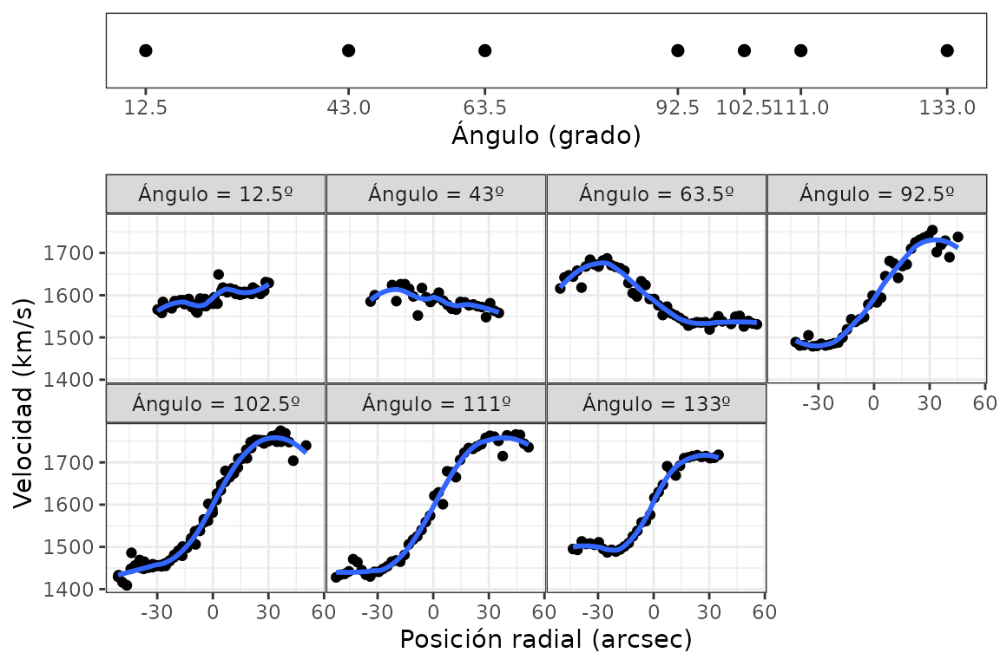
Para armar los intervalos solapados se emplea el algoritmo de conteos iguales, el cual puede ser implementado por fuera de la construcción del gráfico mediante la función equal_count().